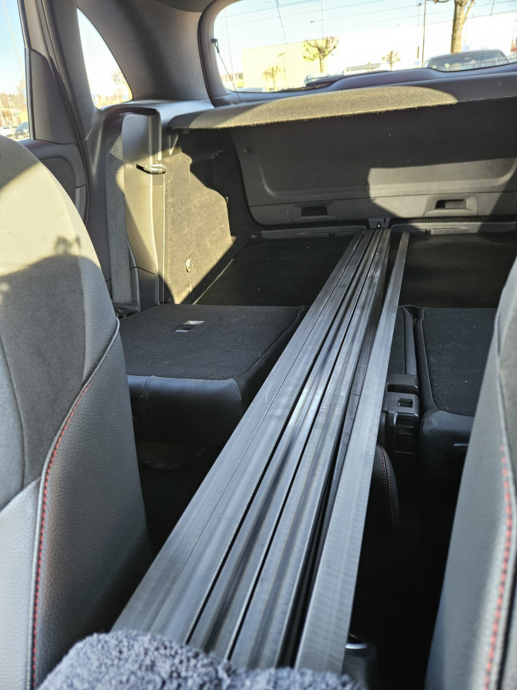

Für den Aufbau unserer Messstationen für das Banzenloch benötigten wir Stahlvierkantrohre,
aus welchen wir einen Rahmen zur Befestigung verschiedener Sensoren konstruieren wollten.
Mit diesen Sensoren sollen später mögliche Fledermäuse wie auch andere Tierarten erfasst werden,
welche die Höhle betreten oder verlassen. Da der Rahmen die Grundlage für unsere Messungen bildet und
den harschen Wintermonaten ausgesetzt ist, war es für uns essenziell, eine stabile, hochwertige und
belastbare Konstruktion zu bauen. Die dafür benötigten Materialien wären jedoch in der
Eigenbeschaffung mit erheblichen Kosten verbunden gewesen und hätten unser ohnehin begrenztes
Budget stark belastet. Umso wertvoller war für uns die Unterstützung durch BAUHAUS, welche im Rahmen
des Sponsorings uns die benötigten Stahlrohre kostenlos zur Verfügung stellten. Dadurch konnten wir
einen wesentlichen Teil unserer Materialkosten einsparen und unsere finanziellen Mittel für
weitere wichtige Aspekte unseres Projektes einsetzen.

Die fertig verladenen und "professionell" gesicherten Vierkantrohre
Auch die Kontaktaufnahme mit BAUHAUS gestaltete sich ausgesprochen unkompliziert.
Bereits nach einem kurzen Telefonat sowie einem kurzen Projekt-Pitch per E-Mail erhielten
wir sofort eine positive Rückmeldung. Die schnelle Zusage und die Kooperationsbereitschaft
erfreuten uns sehr und zeigten, dass das BAUHAUS auch wissenschaftliche Forschung und Projekte
von Schülern gerne unterstützt.
Daraufhin organisierten wir prompt eine Fahrgemeinschaft zur Abholung der Stahlvierkantrohre
in der BAUHAUS-Filiale in Ulm. Als wir dort eintrafen, wurden wir bereits von einem Mitarbeiter
in der Stahlabteilung erwartet. Er war sehr hilfsbereit und unterstützte uns bei der Suche nach
den passenden Rohren. Durch diese freundliche Unterstützung war die Abholung schnell und unkompliziert.
Auch die Qualität der bereitgestellten Rohre überzeugte uns. Sie waren qualitativ hochwertig und
ließen sich im späteren Projektverlauf problemlos bearbeiten und für unsere Konstruktion verwenden.
Die Kooperation mit BAUHAUS war uns eine immense Hilfe für das gesamte Forschungsprojekt.
Wir bedanken uns herzlich für das großzügige Sponsoring, das Engagement und die freundliche Unterstützung
der Mitarbeiter. Ohne diese Partnerschaft wäre die Umsetzung unseres Vorhabens deutlich schwieriger ausgefallen.